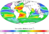

alkalinity

Definition: Alkalinity (from Arabic: القلوية, romanized: al-qaly, lit. 'ashes of the saltwort') is the capacity of water to resist acidification. It should not be confused with basicity, which is an absolute measurement on the pH scale. Alkalinity is the strength of a buffer solution composed of weak acids and their conjugate bases. It is measured by titrating the solution with an acid such as HCl until its pH changes abruptly, or it reaches a known endpoint where that happens. Alkalinity is expressed in units of concentration, such as meq/L (milliequivalents per liter), μeq/kg (microequivalents per kilogram), or mg/L CaCO3 (milligrams per liter of calcium carbonate). Each of these measurements corresponds to an amount of acid added as a titrant.
Source: Wikipedia
Wikipedia Page (Something wrong with this association? Let us know.)
Wikidata Page (Something wrong with this association? Let us know.)